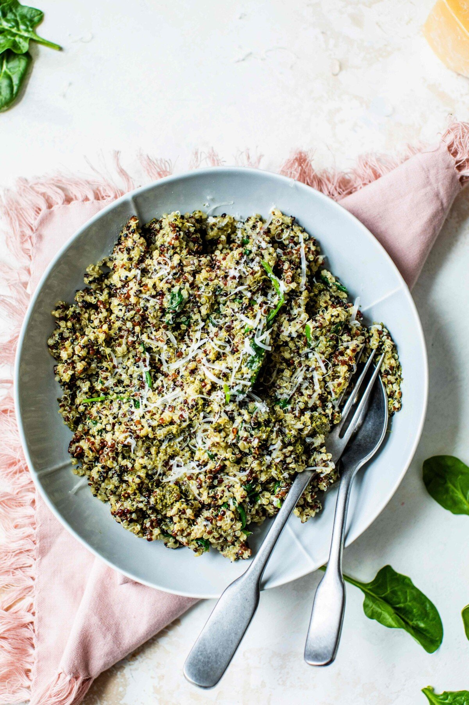

Quinoa Pesto Bowl

Description
This quinoa pesto bowl is a nutritious and flavorful dish featuring protein-rich quinoa mixed with vibrant vegetables and tossed in a homemade pesto sauce. This wholesome bowl offers a satisfying combination of textures and flavors, with the nutty quinoa complementing the freshness of the vegetables and the richness of the pesto. It's a versatile meal that can be customized with various ingredients, making it a favorite among health-conscious food enthusiasts looking for a delicious and nourishing meal option.
Ingredients
- 1 cup quinoa
- Assorted vegetables (1 cup cherry tomatoes, 1 cucumber, 1 bell pepper, 2 cups spinach, 1 avocado)
- Homemade pesto sauce (1 cup fresh basil leaves, 1/4 cup pine nuts, 2 cloves garlic, 1/2 cup olive oil, 1/4 cup grated Parmesan cheese, juice of 1/2 lemon)
- Optional toppings: 1 cup roasted chickpeas, 1 cup grilled chicken, tofu, or shrimp
- Optional garnishes: Fresh basil leaves, lemon wedges, grated Parmesan cheese
Steps
- Rinse 1 cup of quinoa under cold water. Cook according to package instructions until fluffy and tender.
- While the quinoa is cooking, prepare the vegetables. Chop 1 cucumber, 1 bell pepper, and halve 1 cup of cherry tomatoes. Slice 1 avocado.
- To make the pesto sauce, blend 1 cup of fresh basil leaves, 1/4 cup of pine nuts, 2 cloves of garlic, 1/2 cup of olive oil, 1/4 cup of grated Parmesan cheese, and juice of 1/2 lemon until smooth.
- Once the quinoa is cooked, fluff it with a fork and transfer it to a large bowl. Add the chopped vegetables and desired toppings such as roasted chickpeas or grilled protein.
- Drizzle the homemade pesto sauce over the bowl and toss everything together until well combined. Garnish with fresh basil leaves, lemon wedges, and grated Parmesan cheese if desired. Serve and enjoy!